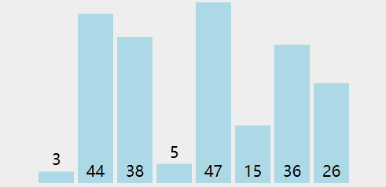

Step to Algorithm(1) - 选择排序
八月 12, 2020
今天也是没有干劲的一天, 明天再努力吧
作为编程的经典问题之一的排序, 放在前面也没什么不妥.
所谓排序, 就是把一组数据(如字符, 整数, 浮点数等)按照一定的方式进行排列. 不同的排列方法所需要的时间/空间都有所不同, 它们都有其自身的优缺点.
本文介绍的是被称为选择排序的排序算法.
选择排序的基本思想是把排序区域的最小数放到最前面的同时, 逐步缩小排序区域.
假设我们有一个数组A, 内容为{ 3, 44, 38, 5, 47, 15, 36, 26 }, 则有其大小为8个项.
刚启动排序时, 排序的范围是A[0] -> A[7].
Step 1: 先假设第一个数, 即A[0]为最小的数, 并向后查找是否有比它更小的数(也就是一个个对比). 如果找到了, 就将找到的值设为最小的值, 否则继续查找.
这一步其实就是查找区域内最小的数, 没学过算法的多半也知道应该怎么找了.
Step 2: 将找到的最小的值与排序区域的第一个值互换.
Step 3: 缩小查找区域(最左边界 + 1), 排序范围变为A[1] -> A[7].
Step 4: 重复上述动作, 直至排完最后一个数.

图源: VisuAlgo, 红色表示当前已发现最小元素，黄色表示已排序元素，绿色表示当前指针位置
总结一下, 选择排序实际上只是在一堆未排序的元素中抽出一个最小的数放在未排序区域的最前端, 作为已排序的元素, 再从剩下未排序的元素中找出最小的数, 以此类推完成排序.
以下是C++代码示例(VS2019编译通过)
1 | void |
如果你有兴趣的话, 可以用C++的模板对代码进行改良, 让它支持任意类型的排序.
查看评论